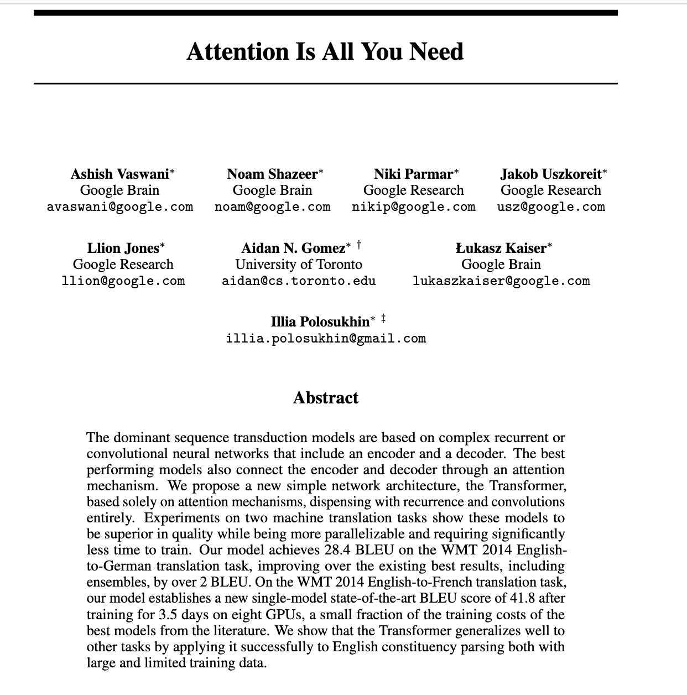
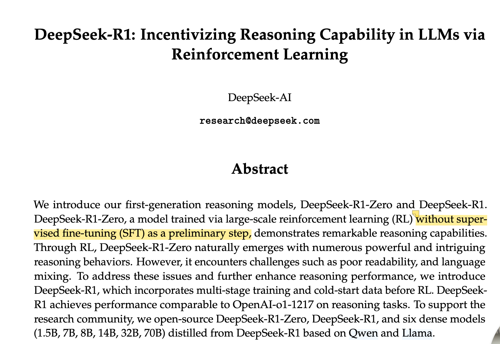

传统阅读 VS Metaso体验
从繁琐的传统论文阅读到Metaso提供的智能化阅读体验，感受AI带来的学术理解“降维打击”
传统论文阅读

- 需要通过Zotero等工具手动管理文献
- 阅读过程中需要不断做笔记和标记
- 理解复杂概念和术语需要额外查询
- 难以快速把握论文核心内容和贡献
- 静态PDF格式缺乏交互性和直观性
- 需要在多个文档间切换对比研究
Metaso核心优势
重新设计的论文阅读体验，让学术研究更高效、更愉悦
AI驱动理解
利用先进的AI技术深入分析论文内容，提取关键信息，并以最易理解的方式呈现
可视化展示
将复杂的学术概念转化为直观的可视化内容，帮助快速理解论文核心贡献
效率提升
显著减少理解论文所需的时间，让研究者能够专注于创新思考而非机械阅读
知识连接
智能关联相关研究和背景知识，构建完整的学术理解网络
实际案例展示
体验Metaso如何展示经典和前沿的AI研究论文
Attention Is All You Need
这篇开创性论文引入了Transformer架构，彻底改变了自然语言处理领域。通过Metaso，您可以直观理解自注意力机制的工作原理和Transformer的创新之处。
查看Metaso演示
